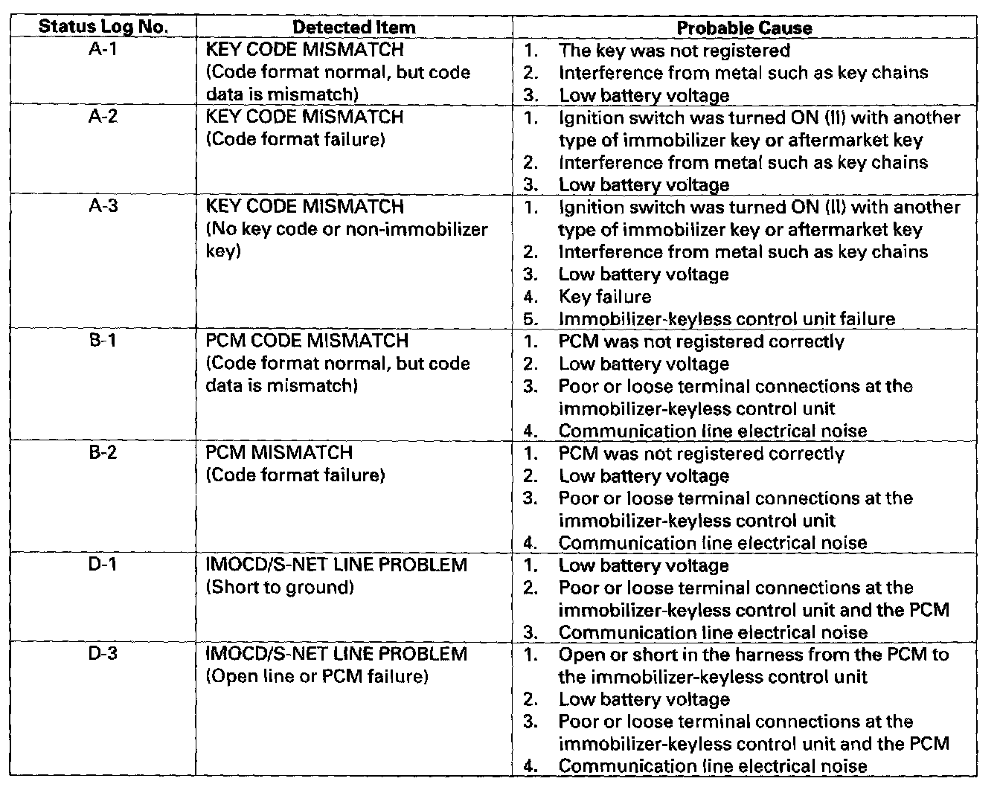

Status Log
Status LogIf you suspect there is a immobilizer system problem, check the status log.
1. Connect the HDS to the data link connector.
2. Turn the ignition switch ON (II).
3. On the HDS screen, select Honda systems, select immobilizer set-up, select immobilizer information, then select status log.

4. Check the Status log count. Troubleshoot the status with the highest count first. If no counts are listed, the immobilizer system is OK. Continue with normal symptom troubleshooting.